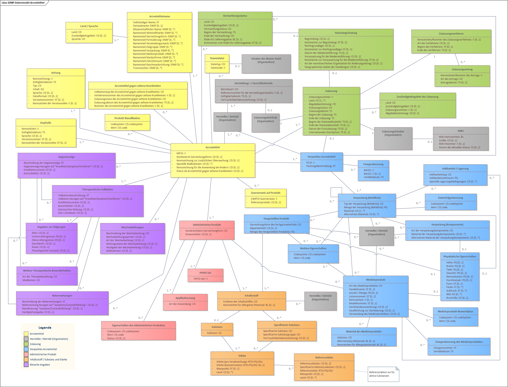

This page is part of the CH EPL (R5) (v1.0.0: DSTU 1) based on FHIR (HL7® FHIR® Standard) v5.0.0. This is the current published version. For a full list of available versions, see the Directory of published versions
IDMP Standard ISO 11615
Introduction
ISO 11615 is a standard within the IDMP framework that provides guidelines for uniquely identifying medicinal products. The standard defines a set of data elements and structures that should be used for the identification of medicinal products throughout their lifecycle.
Key Components
Key components of ISO 11615 include:
- Data Classes:
The IDMP standard groups the data element into approx. 50 classes. Each class cnsists of one to many attributes. The classes are grouped and marked with colors:
- Yellow: Medicinal Product
- Green: Marketing Authorisation
- Gray: Organisations
- Blue: Packaging
- Light Red: Pharmaceutical Product
- Orange: Ingredients
- Purple: Clinical Particulars
For the ePL project, two additional class types have been added for the FOPH:
- Light Green: Reimbursement
- Light Purple: Limitation
For details see chapter: Spezialitätenliste.
- Identifier:
The IDMP standard consists of different identifier. The following list indicates the 5 main identifier.
- Medicinal Product Identifier (MPID) - Identifies the medicinal product as authorised by a medicines regulatory agency. (provided by the Medicines Regulatory Agency)
- Packaged Medicinal Product Identifier (PCID) - Identifies the pack size within an authorised medicinal product. (provided by the Medicines Regulatory Agency)
- Pharmaceutical Product Identifier (PhPID) - Identifies the product administered to a patient. The PhPID identifies a product based on its active substances, strength, administered dose form. (provided by the UMC of WHO)
- Substance Identifier - Identifies the different substances included into a medicinal product. (in a first step the UNII code provided by FDA and the SUB-ID provided by EMA will be used, in the future the (Global Substance Identifier) GSID provided by the UMS of WHO)
- Organisation Identifier - Identifies the Organisations such as: Medicines Regulatory Agency, Marketing Authorisation Holder, Manufacturer and other Establishments such as distributors. (In the European Union and Switzerland the ORG-ID and LOC-ID of the European Medicines Agency (EMA) will be used.
- Data Structures:
- Defines how the identified data elements should be organized and structured to ensure consistency and interoperability across different systems and organizations. (see datamodel below)
- Lifecycle Management:
- Addresses the need for consistent identification throughout the entire lifecycle of a medicinal product, from development and regulatory approval to post-marketing phases.
- Interoperability:
- Aims to facilitate the exchange of medicinal product information between different stakeholders, such as medicines regulatory agencies, marketing authorisation holders, and healthcare providers.
Adopting ISO 11615 helps streamline regulatory processes, improve patient safety, and enhance the efficiency of information exchange within the pharmaceutical and healthcare sectors globally.
ISO 11615 Document
The base data model used for this EPL FHIR IG is based on the ISO 11615 IDMP standard. The standard can be purchased at the ISO website: ISO 11615:2017
IDMP Datamodel
IDMP Datamodel for Authorised Medicinal Products (English)
The following datamodel illustrates the full IDMP datamodel according to ISO 11615:2017

Fig. 1: IDMP Datamodel - Authorised Medicinal Products (English)
IDMP Datamodel for Authorised Medicinal Products (German - Switzerland)
The following datamodel illustrates the full IDMP datamodel according to ISO 11615:2017 translated into German representing the official Swiss locale terminology.

Fig. 2: IDMP Datamodel - Authorised Medicinal Products (German - Switzerland)